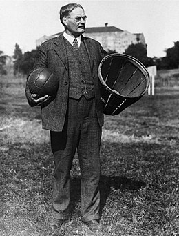
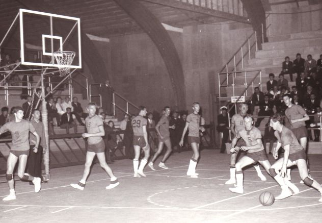

Basketbal is een sport die in 1891 door James Naismith in de Verenigde Staten is uitgevonden.
James Naismith was een sportleraar in Springfield.
James moest een training alternatief bedenken voor zijn rugbyteam, omdat het buiten te koud was om te trainen.
Het spel werd door twee teams van achttien spelers gespeeld.
Met twee perzikmanden (zie bijlage 1) bevestigd aan een balkonrails en een voetbal (zie bijlage 2) probeerden ze in de perzikmand te scoren.
De bedoeling van het indoorspel was dat de vaardigheid meer dan de fysieke kracht het spel bepaalt.
Het hielp de rugby’ers ook om hun hand-oog coördinatie te oefenen.
Veel studenten vonden de sport leuk.
Alleen de conciërge scheen niet tevreden te zijn, want hij/zij moest na elk doelpunt de bal weer uit de mand vissen.

Begin in de 20e eeuw werd de sport bekend in een steeds groter deel van de wereld.
In 1904 debuteerde het basketbal zelfs bij de Olympische Spelen in Saint Louis.
Ook in Nederland werd Basketbal steeds bekender.
Zo is de Nederlandse Basketbal Bond (NBB) opgericht in 1947 met ongeveer 1000 spelers.
De sport werd niet in heel Nederland gespeeld, maar het werd vooral in Amsterdam gespeeld.
